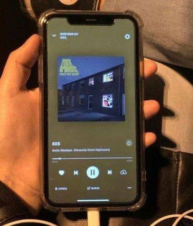
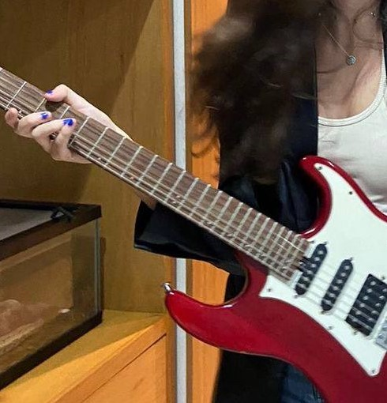
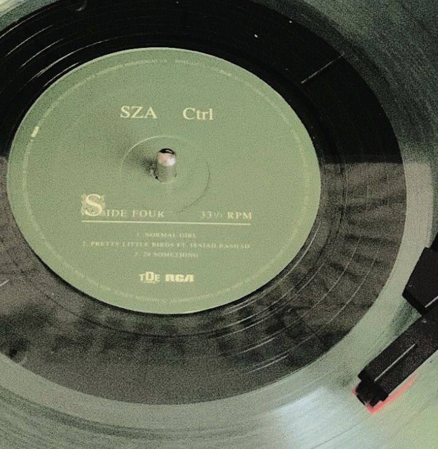

Hablando de mis aficiones, puedo afirmar que la música es una de ellas.
La simple libre expresión o la sensación de escuchar una canción y poder recibir confort
me hace tener fuerzas cuando siento soledad, angustia o cansancio. La música desde que
tengo uso de razón siempre ha sido el pilar de mi vida.



La música es terapéutica para mí. Son increibles las grandes oportunidades que tenemos
de crear. Me apasiona el proceso creativo para hacer música. Una de mis cancionesfavoritas es Jamais Vú de BTS, porqueme siento profundamente identificada con ella.: